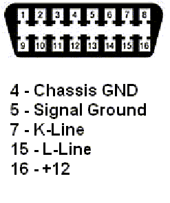

|

The
"Aftermarket Radio Problem"
Background:
Somewhere between 1997 and 1998, VW and Audi started using diagnostics-capable radios is most of their models. The means the dealer's scan tools (and my own
VAG-COM system) can talk to the radio. Why? So you can
set various options.
In addition, these radios constantly monitor their speaker outputs and if you have an open circuit to one of the speakers, and if you have an open or short, even a momentary one, they will record a fault code.
The problem is, VW brought the "K-Line", the wire on which all of the control modules communicate with the control modules in the car to the radio on a pin in the connector on which older radios used to put +12 back into the harness.
(I'm not sure whether this was for antenna power or as an amplifier turn-on or what).
So if I were to take the non-diagnostics capable radio out of my 1997 GTI and put it in a 1998 (where there should be a diagnostics-capable one), it fits perfectly, plugs right into the harness, but the K-line is ends up shorted to +12!
Aftermarket Radios
Now people hardly ever put older stock radios in newer cars. What they often do is install better after-market radios. And they most often do this by using an aftermarket adapter-harness which plugs right into the car's harness, so they don't have to cut up the car's harness. Trouble is, some of the aftermarket
harnesses faithfully reproduces the older, non-diagnostics radios with a loop of wire between +12 and the pin where the K-line is on newer
models. So you install your fancy new radio with one of these and everything works fine until.. Somebody plugs in a scan tool.
The Problem
Nothing in the car cares if the K-line is shorted to +12. The K-Line is not used for intra-vehicle communications. But a scan scan-tool initializes a communications session by pulling the K-line to ground. The K-line is supposed to have some voltage on it, but through a high-impedance source. If the K-line has "hard" +12 on it, something has to give!
What "gives" is usually the scan-tool's output driver for the K-line. And fixing a VAG-1551/1552 with a blown K-line driver is expen$ive!
But the ISO-COM PC<->Car interface adapter that I provide with my VAG-COM software has a small user-replaceable
fuse protecting the K-Line output driver, and there's a spare fuse taped under the lid of the little box. No big worries there..:-)
The Dealers
Any VW dealer that tells you they can't scan your car because you have an aftermarket radio is either lazy or ignorant. The
TSB on the subject
suggests that they should yank your aftermarket radio and inspect the K-line, and if it's connected, they are supposed to cut it from the harness and tape it back.
Sometimes it pays to educate the dealer yourself. Print out a copy
of the TSB and hand it
to them! Or better yet, buy my VAG-COM
package and scan the car yourself..;-)
Test for this
problem yourself
You can test for this problem yourself
without removing the radio. First, if your car is a 1996 or earlier
model, don't bother -- the K-Line doesn't go to the radio harness.
If you have a volt-meter:
measure the voltage between pins 4 and 7 of the diagnostic connector with
the ignition and radio turned ON. If it's under 9V, your
K-line is fine. If it's over 9V, the results are inconclusive.
You'll need a 1k Ohm (approximately) resistor. Put it between pins 4
and 7 of the diagnostic connector. Now measure the voltage between 4
and 7 (across the resistor). If it's under 1V, you don't have the
problem. If it remains near 12V (the resistor will get hot!) you do
have this problem and you'll need to fix it per the TSB.
If don't have a volt-meter:
Go to Radio-Shack and buy a 1K-ohm resistor. I think they cost $0.99 for a pack of 5.
Put the resistor between pins 4 and 7 of your diagnostic connector.
Ensure it's making contact with both pins. If the resistor gets hot, your K-line is shorted to +12. If it does not get hot, you're fine.
The Diagnostic Connector

Main
VAG-COM Page
Ross-Tech
Home Page
|